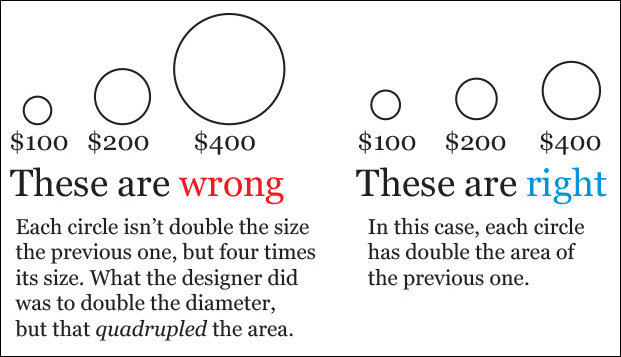
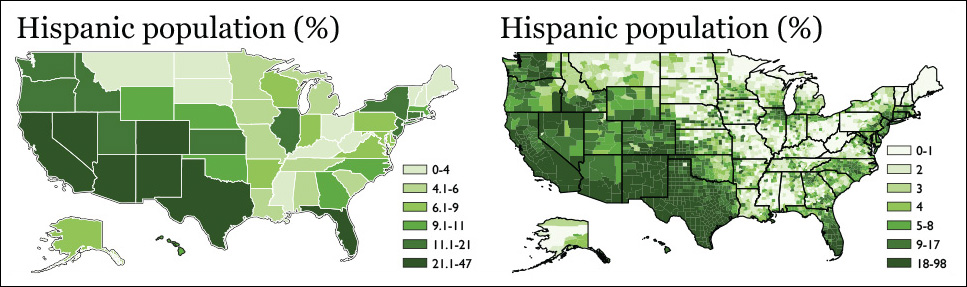

The first mistake that people often make in creating a data map is that they use scale circles in a misleading way. It is an effective and intuitive method to encode data with a geographical map using circles. However, it is worth noting that when you scale those circle, you should scale it based on the area, not the diameter. If you have two areas that have $200 and $400 associated to each of them, you should double the size of the one with $400 so that they represent the correct information.
Example of misleading scaling:

The second common mistake is how you color a chropleth map. A chropleth map is a type of data map that utilizes color to represent the data. In creating the map, the color scale is very important because it affects the whole impression of data. Cairo gives an example of a chropleth that represents the ratio of Hispanic people in the US. This graph was misleading because the color was set to exaggerate the Hispanic population, which would lead us to think half of the population is Hispanic.
